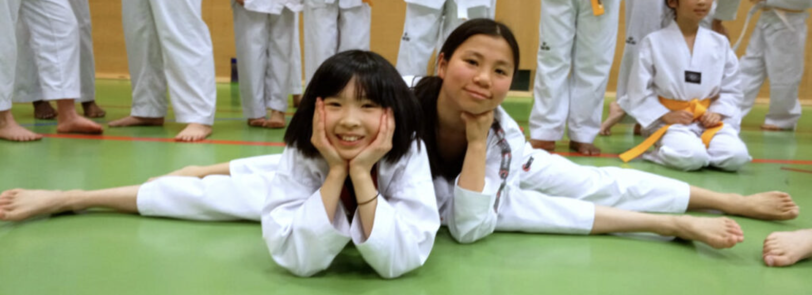
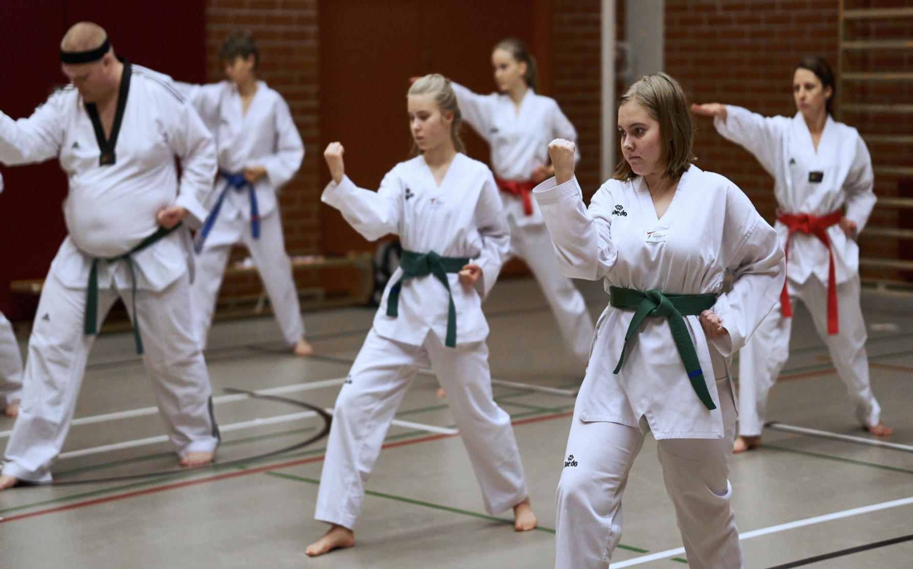

ALOITA TAEKWONDO
Miten aloitan taekwondon?
Tarjoamme monipuolisesti taekwondoharjoituksia pääkaupunkiseudulla niin aloittelijoille, kuin kokeneemmillekin harrastajille. Aikuisten treeneissä alaikärajana on 14 vuotta, ja yläikärajaa harjoitteluun ei ole!
Lapsille ja nuorille harjoituksia löytyy ikäluokittain. Harjoituksia järjestämme Helsingissä ja Espoossa. Näet kevätkauden harjoitusajat lajia aloittaville aikuisille AIKUISTEN PERUSKURSSI LINK, sekä lapsille ja nuorille LASTEN PERUSKURSSI LINK. Koko harjoituskalenterimme on nähtävillä harjoitusajat -SIVULLAMME.(HARJOITUSAJAT LINK)
Mukaan kevätkauden harjoituksiin voi tulla mukaan myös myös kesken kauden, tai aloittaa vasta uuden vuoden jälkeen kevätkauden alussa. Nyt kesäkaudella heinäkuussa ja elokuun alussa ei treenejä harjoitusten ollessa kesätauolla.
Ilmoittaudu mukaan
Voit alla olevan lomakkeen kautta ilmoittautua mukaan kahdelle ilmaiselle kokeilukerralle harjoituksiin!
Täytettyäsi lomakkeen saat yhteydenoton meiltä harjoituksiin liittyen (kesällä treenitauko, palaamme elokuun alussa), ja ohjeet harjoitusten alkamisesta.
Lisätietoa harjoittelusta ja kursseista:
Mari Aalto
mari@wondo.fi/0405435381
Mitä kurssin aloittaminen vaatii?
Aloittamiseen tarvitset vain innostuneen asenteen. Aikaisempaa kokemusta ei tarvitse olla! Harjoitteluun tarvitset sisäliikuntaan soveltuvat liikunnalliset vaatteet ja vesipullon. Harjoittelu tapahtuu avojaloin. Lisää tietoa taekwondon harjoittelusta löydät HARJOITTELU LINK
Ohjeet harjoituksiin kulkemiseen löydät HARJOITUSPAIKAT LINK. Paikalle saapuessasi kerro tunnin ohjaajalle tulevasi kokeilemaan ensimmäistä kertaa.
Ilmoittautumisen jälkeen sinulle lähetetään sähköpostiin kirjautumisohjeet jäsenjärjestelmäämme, sekä lasku peruskurssista. Sinulla on kaksi maksutonta harjoituskertaa aikaa päättää haluatko jatkaa kurssilla. Jos ensimmäisten kokeilukertojen jälkeen mielesi muuttuukin, niin ilmoita siitä mari@wondo.fi
Peruskurssi päättyy vyökokeeseen
Peruskurssin jälkeen järjestetään vyökokeet harrastajille. Ensimmäinen vyökoe sisältyy uusille harrastajille kurssin hintaan!
Peruskurssin jälkeen sinulle avautuu mahdollisuus osallistua laajemmin seuran harjoituksiin. Tarjoamme peruskurssin suorittaneille esimerkiksi vauhdikkaita ottelu- ja kamppailuharjoituksia sekä kehonhallintaa kehittäviä liikesarjaharjoituksia. Lue lisää taekwondon eri osa-alueista TAEKWONDON OSA-ALUEET LINK
